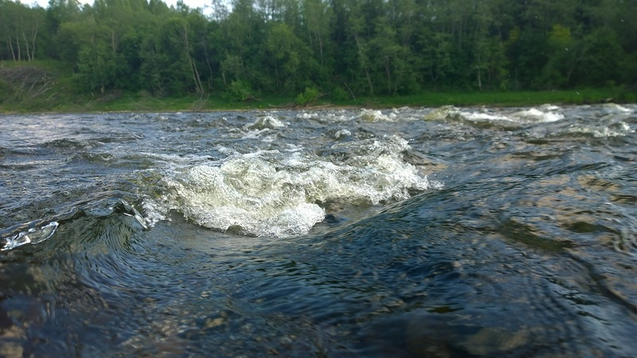
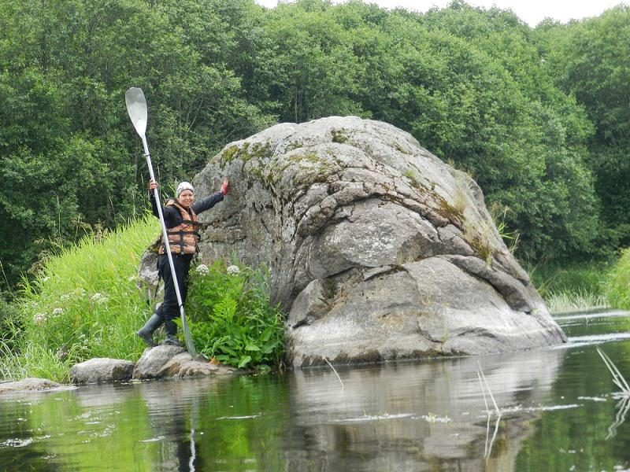
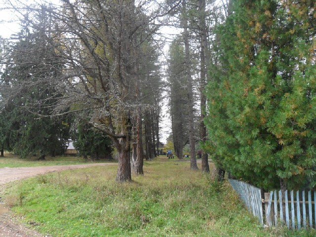
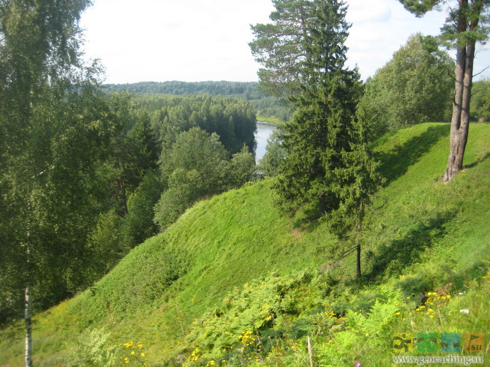
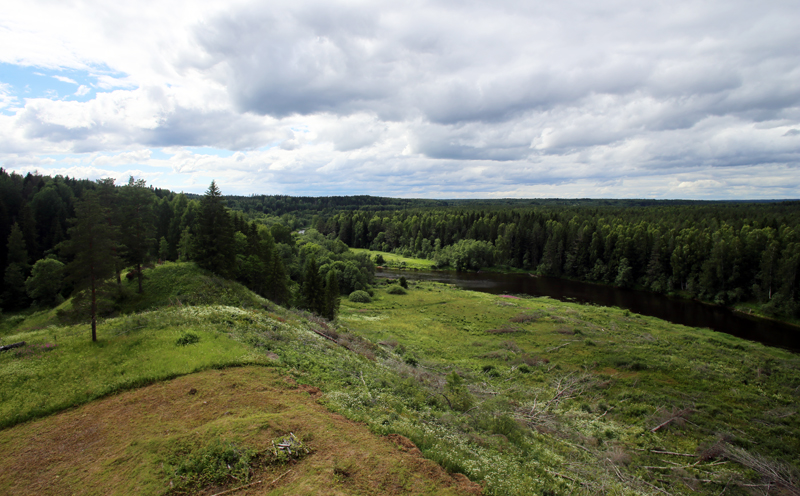
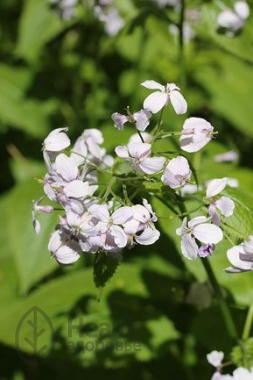
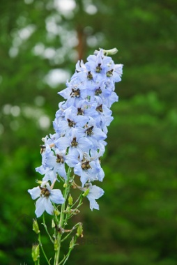
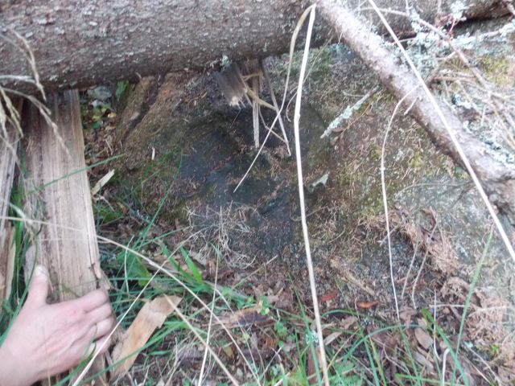
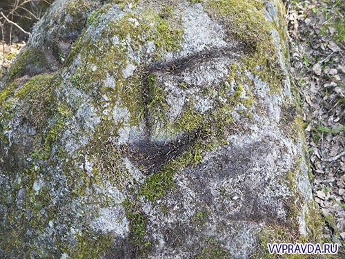

Селижарово
Природа
Бенские пороги
Бенский порог - уникальное место, расположенное в селе Ельцы. Бенские пороги – один из самых красивых и известных памятников природы Селижаровского района и главное препятствие на пути туристов-водников, особенно когда уровень воды низкий. Многочисленные водовороты и буруны создают шум воды, который слышен на большом расстоянии при подходе к порогам. Скорость течения Волги здесь очень высокая, и управлять плавсредством весьма трудно. Бенские пороги – место рыбалки с незапамятных времён. Здесь добывают жереха, щуку, голавля, судака. На порогах есть и хариус, но он внесён в Красную Книгу. У Бенских порогов археологи открыли несколько стоянок-мастерских каменного века, датируемых 9-2 тысячелетиями до н.э. При раскопках найдены кремнёвые наконечники стрел, скребки, резцы, ножи, рубящие орудия и нуклеусы – куски кремня, которые раскалывали и делали из получившихся пластин орудия труда и наконечники охотничьего оружия.
Валун «Воробей Пьянковский»
Принесенный сюда, вероятно, во время ледникового периода около 150 тысяч лет назад. Поражают его размеры: высота над уровнем воды 3,7 м, длина по окружности – 14,5. Его пытались взорвать в прошлом веке для улучшения судоходства по реке.
Дружногорковский парк
Памятник природы в деревне Дружная Горка. Площадь - 0. 9 га. Расположен в излучине реки Пырошня, на ее левом берегу. Начинается аллеями из лиственниц и берез. Первая аллея только из лиственниц, тянется от дороги к школе и парку, перпендикулярно ей расположена аллея из лиственниц и берез, посаженных поочередно. Возраст деревьев парка свыше 100 лет. Окружность некоторых лиственниц достигает 2 м. Парк разделяется на две части: в первой сохранилась старинная планировка посадок со старовозрастными деревьями, вторая - лесопарковая, с посадками дуба, липы, лиственницы, вяза гладкого, обильно возобновляется ель и рябина. В парке имеется вид, занесенный в Красную книгу СССР, - Астранция большая. Ее широкие листья и мощные соцветия придают травяному покрову парка неповторимый облик.
Елецкая круча
Елецкая круча - крутосклонный (более 200) левый коренной берег реки Волга, где она меняет свое широтное направление на меридиональное. Ландшафт длиною около 7 км напоминает горный. Скорость течения воды в Волге на этом месте составляет 0,6м/сек. С вершины холма открывается исключительно живописный вид на долину реки Волга и окружающие леса. Вершина склона занята богатым разнотравным лугом с отдельными мощными старовозрастными соснами.
Горышенский холм
Горышенский холм ( Горышенские высоты) расположен на правом берегу Волги. Это место древнего поселения (летописное поселение (городище) Горышин) является одновременно и памятником природы. Состоит из 2-х высот с относительным уровнем от уреза воды около 35м. Своей длиной оба холма вытянуты с запада на восток на 250-300 м.
Растения, занесенные в Красную Книгу
Лунник оживающий растет в устье Большой Коши
Живость высокая на Горышенском холме
Хитицкий камень-следовик
Старожилы деревни дорогу к следовику негласно охраняют. Согласно научной точке зрения, валуны на Верхневолжье ледникового происхождения. Николай Карамзин в «Истории государства Российского» упомянул, что подобные камни - «памятники каменосечного искусства древних славян, от которых остались большие гладкие обделанные плиты, на коих выдолблены изображения рук, пят, копыт и прочее».
Иван Иванович Травкин, известный учитель-краевед, писал в районной газете № 57 за 1959 год: «Это огромного размера придорожный камень-следовик находится возле деревни Хитицы. Камень имеет форму гигантского древнего молота, на котором высечены знаки: след волка и рог быка-тура. По мнению ученых, этот и подобные ему камни-следовики в глубокой древности могли обозначать границы владений родов и племен, а много позднее, в XII веке, обозначать границы княжеств (в здешних местах – Смоленского и Земли Новгородской). Следовательно, эти камни со следами имеют большую научную ценность. В древнюю эпоху каждый род носил имя какого-либо животного, которое и считалось покровителем и другом его. А камни со следами животных могли обозначать соседство родов и, может быть, границы их владений».
Хитицкий камень имеется в списке историко-культурных валунов Тверской области. Всего их числится 48. Данный перечень опубликован в статье А.В. Курбатова «Историко-культурные валуны Тверской области» в сборнике «Тверь, Тверская земля и сопредельные территории в эпоху средневековья», изданном в 1996 году. Там указаны и размеры камня – 2,5 на 2 метра, и характеристика знаков.
Рядом много других камней, на одном из которых изображена стрела
